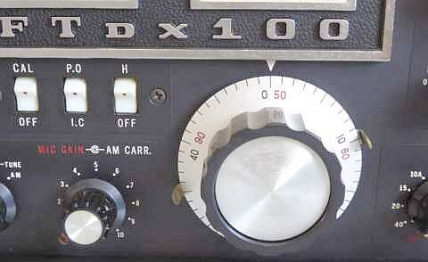
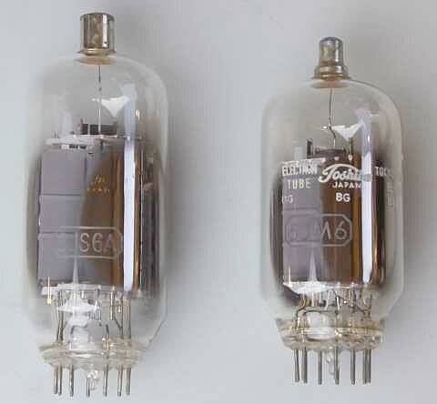
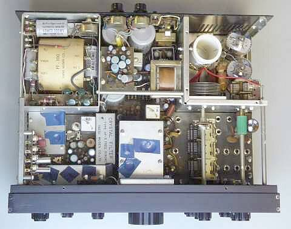
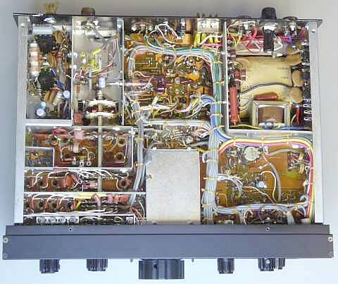
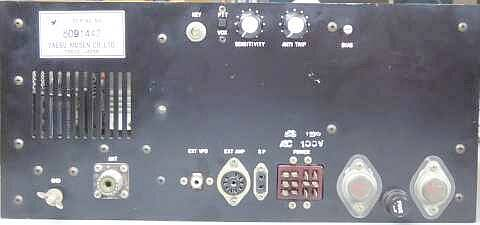
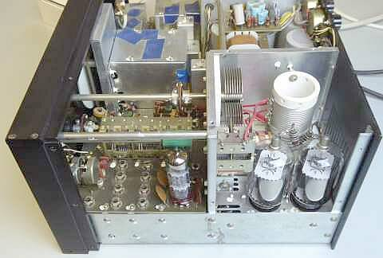
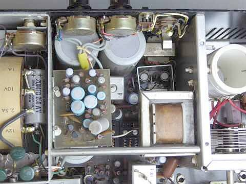

 |
懐かしいメイン・ダイアルです
ＦＬ／ＦＲＤＸ４００（初期モデル）を長年愛用しましたが､そのダイアルと同じです
１回転５０ＫＨｚ
外周にあるノブは､ダイヤル回転の重さを可変出来るもので一杯絞めれば、ダイアル・ロックです |
 |
送信ファイナルは、６ＪＭ６ｘ２本
６ＪＳ６より一回り小型です
（左写真参照）
その分、ファイナル部分はコンパクトに仕上がっています
プレート電圧５００Ｖで０．２Ａ 入力１００Ｗを得ています
プレート電圧は、３８０Ｖをブリッジ整流
ＳＧ電圧も、１２０Ｖを半波整流して１５０Ｖと、無理の無い電源設計、といったところです |
 |
シャーシ上面
非常にコンパクトにまとめられています
構造強化のためのシャフトが２本採用されています
固定ＣＨのクリスタルを取り付けるＬアングルも構造強化の役を担っています
各穴を塞ぐテープは､前オーナーの配慮
クリスタル・フィルタが大きく見えます
きっとＨＣ－６／Ｕタイプのクリスタルを６個使ってあるものでしょう
|
 |
シャーシ底面
ワイヤーハーネスを使って､整然と配線してあります
配線の綺麗さはＹＡＥＳＵが国産の中では一番でしょう
配線を追いかけるのは大変ですが・・・・ |
 |
リアパネル
スピーカー出力は､懐かしいフィーダーコンセント
本体にスピーカーの内蔵はありません
ＤＣ-ＤＣインバータ用ＴＲのヒートシンクは見当たりません
リアパネルに直接取り付けることで放熱器として使用してあります
ファイナル部の強制空冷用ＦＡＮオプションはありません |
凹凸が少なくシンプルに見えます
ＶＯＸに関係する調整ＶＲは、ＰＴＴ-ＶＯＸの切替ＳＷも含め、リアパネルに配置されています
ＤＣ-ＤＣの放熱について、電源トランスの周囲をアルミ板で囲ってあり、このものもリアパネルに固定されているため、一緒に放熱の役を担っていると考えられます |
 |
FT-１００と比べ、ＲＦ部の基板はベークライトからガラスエポキシに変更されており、問題があったのかなと思われます
この点は、ＦＴ-１０１にもそのまま継承されています
ファイナル・プレート同調ＶＣは、ロードＶＣ同様、減速機構無しです
発熱源は､ここに見える真空管３本のみです
ファイナル部は､もちろんパンチングメタルで塞がれています（写真は取り外して撮しています）
ドライブ／プリセレクタ同調機構は、一般的な３連ＶＣ方式が採用されています
|
ＲＦ同調機構は､μ同調方式ではなく一般的なＶＣ方式です
アマチュアバンド専用と言うことでしょう（一方ＦＴ-１０１は、ゼネカバを目指してμ同調方式を採用）
ＤＲＡＫＥ ４シリーズと同じ発想・考えのようです
セパレートは､ゼネカバ対応でμ同調機構を採用、トランシーバは､アマチュアバンド専用で通常のＶＣ方式を採用、です |
 |
今回のトラブルの原因は､そのほとんどがこの写真の中に！？
ＡＦファイナル・トランジスタの片側がＮＧ・・・この際ですから２本とも交換しました
２ＳＢ２００は思ったより簡単に入手できたのですが､交換作業はとてもやりにくかったです（コの字型の放熱板が取り付いているやや大きめのメタルの頭が２ＳＣＢ２００）
もう一つの大きな原因、リレー接点の接触不良です
トランスとＲｅｇ回路の下に２つ並んで取り付けられています（取り外した状態で撮しています）
これが最近目にしない形状のもの、その昔パーツ屋をしていたときには良く目にしたものなのですが・・・
最悪？は頑張って接点を磨きます！ |
|
バンドＳＷ､クラリファイアＶＲほか、接触不良を起こしているものが多く､一生懸命清掃！です
その上で､トラッキング調整です |
| ＢＡＮＤ（ＭＨｚ） |
ＡＭ
３０％ １ＫＨｚ 変調ＯＮ／ＯＦＦで
S/N１０ｄｂが得られる信号強度 |
ＣＷ／ＳＳＢ
ＲＦ信号のＯＮ／ＯＦＦで
S/N１０ｄｂが得られる信号強度 |
| ３．６ |
５．７μV |
１．５μV |
| ７．１ |
２．２μV |
０．６μV |
| １４．２ |
１．４μV |
０．２８μＶ |
| ２１．２ |
１．２μＶ |
０．２μＶ |
| ２８．６ |
１．５μＶ |
０．３μＶ |
Ｌｏｗバンドに何か問題が？？ 実用上は問題無さそうですが、要精査です
S/Nがとれない・・・残留ノイズが多い、です
各バンドとも、４０ｄｂμVで、おおよそS９を指示します
| ＢＡＮＤ（ＭＨｚ） |
ＣＷ送信出力 |
| ３．５ |
７０Ｗ |
| ７ |
６０Ｗ |
| １４ |
６０Ｗ |
| ２１ |
５０Ｗ |
| ２８ |
５０Ｗ |
|